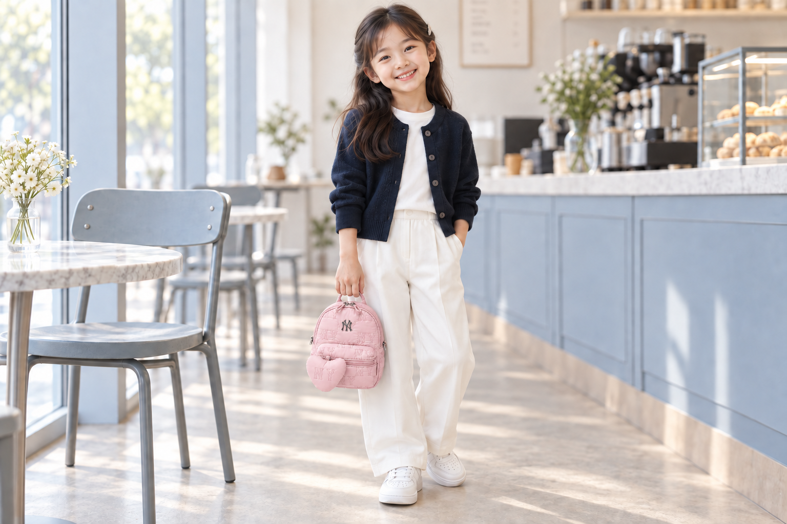

NY monogram quilting
A repeating NY pattern and front logo.
Reimagined in matching shades of pink.
THE LITTLE PINK EDIT
Monogram Quilted Mini Backpack
Imagine soft pink with an NY pattern and a heart detail.
PINK CONCEPT
AI color concept — The blue reference bag has been recolored pink using AI. Availability of an actual pink version has not been verified.
The image above is an AI color edit, not a photograph of a confirmed pink product.
A subtle shade. A rounded silhouette.
Add a little accent to everyday style.

A repeating NY pattern and front logo.
Reimagined in matching shades of pink.
A heart charm that complements the bag.
A sweet touch for a little silhouette.
Detail images are enlarged views of the AI pink color edit, based on the supplied blue product photo.
From the top handle to the front zip pocket,
explore the shape in this AI color concept.
Easy everyday outfits, with a little color.
Explore styling ideas with an AI child model aged around 7–9.


These measurements describe the blue reference bag. The pink version is a color concept.
ABAI pink color concept · front view
SIZE F
Values are from the supplied blue reference bag size chart. The original chart does not specify a unit; this must be confirmed before sale.
Measurements may vary depending on where they are taken. Use the listed reference dimensions and blue source photo; AI images do not establish actual size or fit.
Reference details, not confirmed pink product specifications. The name, style code, materials and dimensions below belong to the blue source product. No official pink variant or pink SKU has been verified.
All pink bag images are AI color concepts based on a blue source product, including the catalog view, detail crops and size-guide image. Pink availability is unverified. Colors, logos, proportions and hardware details may differ from the source product. Please prioritize the original blue photo and verified product information.
Colors may appear different depending on your screen and lighting.
Source for the blue reference product name, category and composition: Official MLB blue reference product
Please check the seller's information for price, shipping, exchanges and returns.